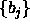
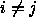
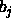
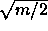
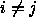
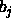
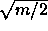

The parameterization chooses a set of additive constants 
that are pairwise relatively prime, i.e.  when
 so that the sequences are generated in different orders.
The best choice is to let  be the jth prime less
than  [14]. One important advantage of this
parameterization is that there is an inter-stream correlation measure
based on the spectral test that suggests that there will be good
inter-stream independence.
when
 so that the sequences are generated in different orders.
The best choice is to let  be the jth prime less
than  [14]. One important advantage of this
parameterization is that there is an inter-stream correlation measure
based on the spectral test that suggests that there will be good
inter-stream independence.